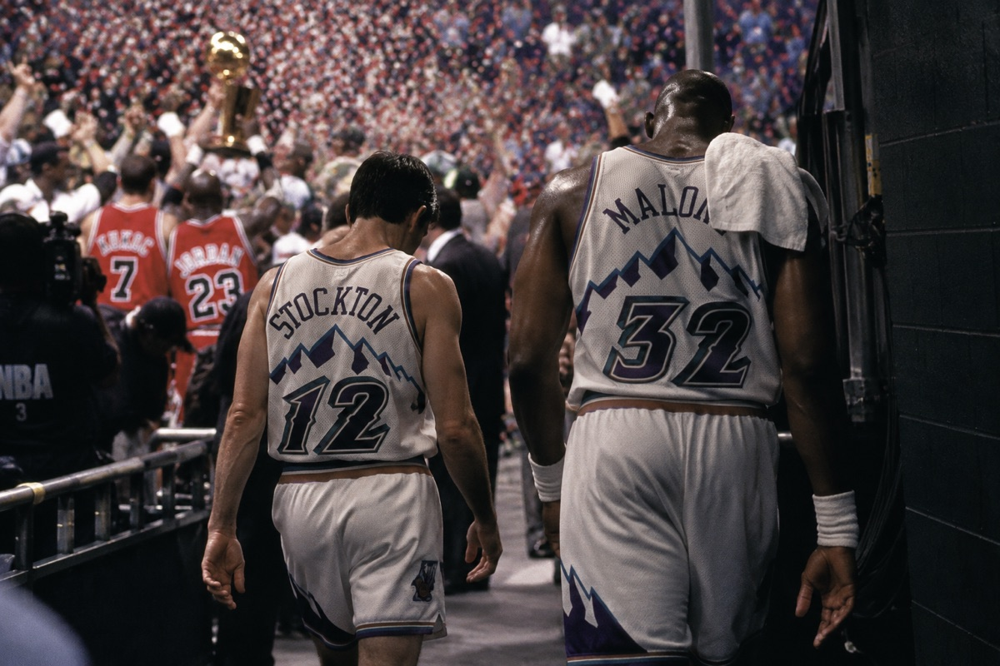
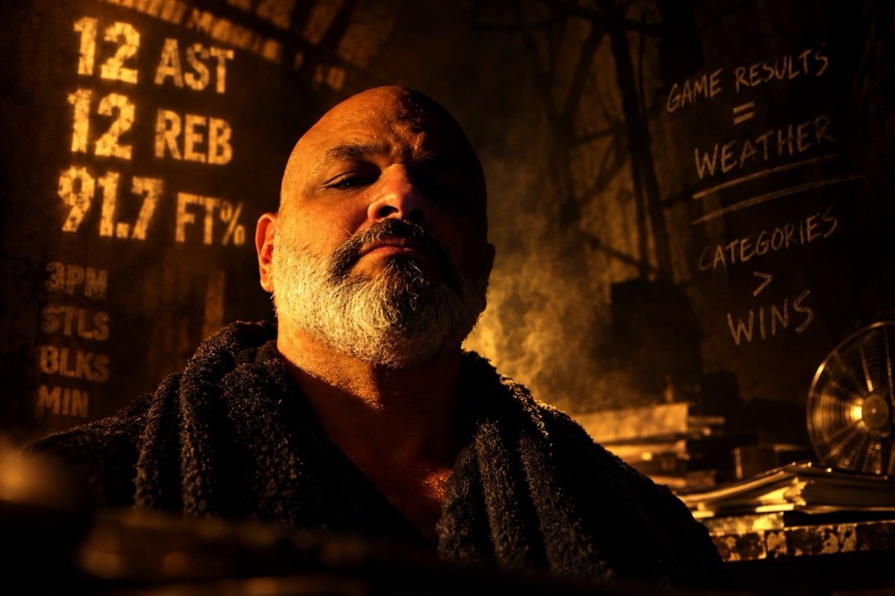
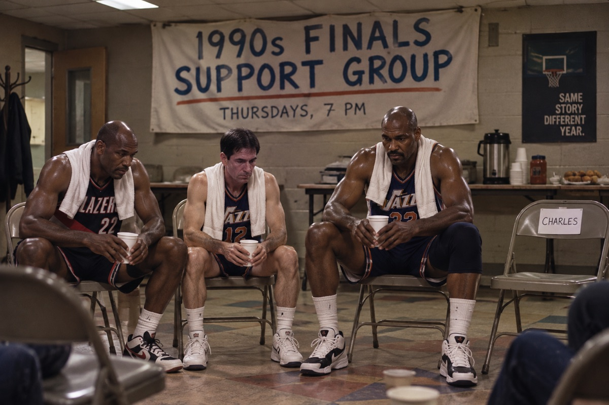
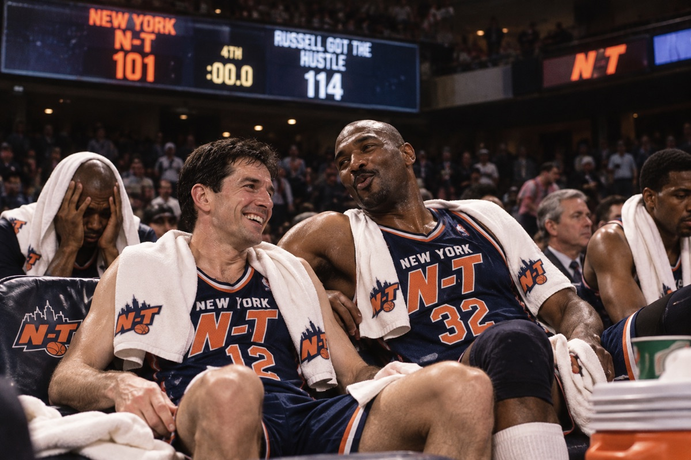
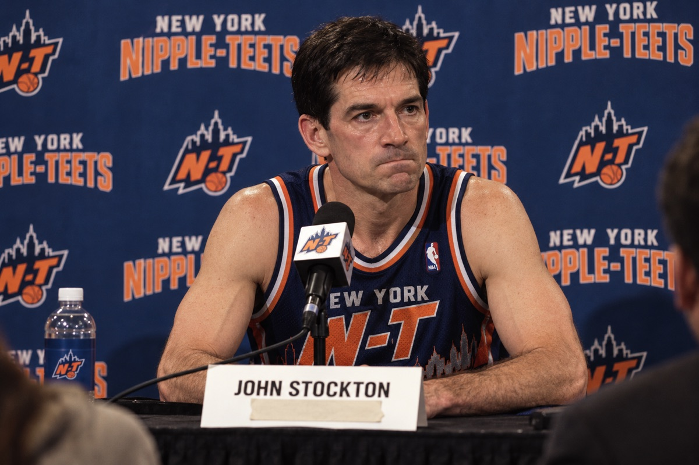

Vol. II · No. 2 · Week 2 Edition
The Fieldston Dispatch
All the Legends That Are Fit to Print
Feature · New York N-T
The Right Column
John Stockton and Karl Malone never won the games that mattered. In this league, they don’t have to — and the commissioner knew it before anyone else.
 By Lois Kranberries · Dispatch Staff Writer
By Lois Kranberries · Dispatch Staff Writer
New York — On the night of June 14, 1998, in Salt Lake City, Karl Malone caught the ball on the low block with the Utah Jazz up a point and the NBA Finals slipping toward a seventh game. Michael Jordan came from behind and took it from him. Seconds later, Jordan was at the top of the key, Bryon Russell was sliding to the floor, and the ball was falling through the net.
Utah never got that close again.
John Stockton and Malone played 18 seasons together. Stockton retired as the NBA’s career leader in assists and steals, records that still stand. Malone retired as one of the most prolific scorers the game has ever produced. They did not win a championship, and that fact has followed them ever since, filed under the phrase basketball reserves for the gifted and ringless: stat guys.
Twenty-eight years later, the stat guys are holding a playoff spot. Barely.
After two weeks of the Fieldston league’s second season, Jess Gangi’s Nipple-Teets — the New York N-T on jerseys and in polite company — are 11-11 in the category standings, sixth of eight and sitting on the final playoff line. They opened the season 8-3, tied for first. In the simulated games, the same team is 5-9 and 2-6 on the road.
Most owners would find that slide alarming. The commissioner finds it beside the point.
“People keep telling me we’re 5-9,” Gangi said. “I keep telling them to read the bottom of the page.”
The bottom of the page is the small print under the league’s standings, which explains that teams are ranked by categories won and that the top six make the playoffs. The Nipple-Teets are currently sixth. Game results decide nothing. In the commissioner’s description, the simulated record is “weather.”

Madness or Genius
Gangi is, by wide agreement, the most experienced fantasy player in the league. He also runs Gentlemen’s Agreement, which leads the league at 16-6 in categories. The man who wrote the rules is, for the moment, the man winning under them. He was the first owner to say aloud what the format actually rewards.
“Real basketball asks whether you won in June,” Gangi said. “Fantasy asks whether you showed up every night and filled the box. Nobody in history filled the box like those two.”
Seen that way, Stockton and Malone are not a cautionary tale. They are a dynasty: assists, steals, rebounds, free throws, and a durability that bordered on the unreasonable. Their reputation for coming up short when it mattered, Gangi argues, is not a flaw in a category league. It is a pricing error.
“Everybody else drafted rings,” he said. “I drafted assists. The rings were expensive. The assists were on sale.”
Put plainly, the commissioner’s position is that in fantasy, you throw out the wins. It is either the most radical idea in the league’s short history or the most obvious one. Through two weeks, the standings support both readings: one of his teams leads the league, and the other is clinging to sixth.
“Everybody else drafted rings. I drafted assists.”
Jess Gangi, Commissioner
Filling the Box
Through two weeks, the box has been filled. Stockton leads the league at 11.4 assists a game. Malone is averaging 13.5 rebounds, second only to Kareem Abdul-Jabbar, with Dwight Howard adding 9.3 more. In the opening week, Clyde Drexler was the team’s best player outright: 22.7 points on 52.3 percent shooting and 44.9 percent from three.
Malone also opened the season shooting 91.7 percent from the free-throw line. For a career 74 percent foul shooter whose missed free throws in the closing seconds of Game 1 of the 1997 Finals remain part of the permanent record, this is a development. The Mailman, it turns out, delivers when nothing is riding on the package.
N-T Through Week 2
- Stockton11.4 ast · 1st in league
- Malone13.5 reb · 2nd in league
- Howard9.3 reb · 8th in league
Two Scoreboards
- Wk 1 → Wk 2
- Categories8-3 → 11-11
- Category rankT-1st → 6th
- Simulated games2-5 → 5-9
Playoff seeding is decided by categories. Top six qualify. The N-T are sixth.
Then there is the column that explains the losing record. In the opening week, every Nipple-Teets starter had a negative plus-minus. Drexler was at minus-8.9 while averaging 22.7 points. Stockton was at minus-5.0 while leading the league in assists. The team fills the box score and loses the minutes.
Plus-Minus, Week 1
- Bryant−9.3
- Drexler−8.9
- Stockton−5.0
- Howard−4.0
- Malone−3.7
- King+6.9
“It’s the most Utah stat line I’ve ever seen,” said Leonard Kasprzak, the league’s most underread analyst. “And the best player on it is from Portland.”
A Certain Shared History
The roster has a theme, whether or not its owner intended one. Drexler lost to Jordan in the 1992 Finals. Stockton and Malone lost to him in 1997 and again in 1998. Drexler, to be fair, eventually got his ring in Houston. The other two are still waiting.
Jordan, for the record, now plays for Lewis, whose two teams currently occupy the bottom two spots in the category standings.

“I didn’t build a support group,” Gangi said. “But if one formed, I’d let them use the conference room.”
The irony runs the other way, too. The roster’s one certified big-game player, Kobe Bryant and his five rings, appeared in three games in the opening week before plantar fasciitis put him out for four more. In those three games he posted the worst plus-minus on the team. He was due back midway through Week 2.
In the opening week, the only Nipple-Teet consistently winning his minutes is Bernard King: plus-6.9 in under 10 minutes a night, on 64.3 percent shooting. King, it should be noted, spent his best years with the Knicks. He is wearing New York orange again and appears to be the only one who knows what to do with it.
No Pressure
Inside the locker room, the mood is not what a 5-9 team’s usually is.
“In Utah, every June was a referendum,” said Leland Kostecki, the team’s director of media relations. “Here, a loss is a Tuesday. John’s smiling. Karl’s whistling at the line. I’ve never seen two people enjoy a losing week this much.”

There is one exception to the ease, and it concerns the franchise’s name. In two weeks of media availability, Stockton — still, by any measure, the league’s choir boy — has referred to his employer as “the club,” “our group” and, once, under sustained questioning, “New York.” He has not said the name aloud.
“We’ve stopped asking,” Kostecki said. “Out of respect, mostly. Also because he just looks at you.”

The name was the commissioner’s choice. Asked whether he would consider changing it to accommodate his point guard, Gangi said he would not.
“He’ll get there,” Gangi said. “He got to 15,806 assists. He can get to two words.”
The Other Russell
It is two weeks of fourteen, and Gangi said so before anyone could ask. Fourteen games is not a season, and plus-minus has a way of correcting itself. But the shape is already familiar to anyone who watched Utah in the 1990s, with one difference that changes everything.
The team leading the league in actual wins, at 11-3, is named for a different Russell. Bill Russell won 11 championships, more than anyone in the history of the sport, and his name has long been shorthand for the idea that winning is the only stat that counts. A Russell ended Stockton and Malone’s best chance in 1998. Another one is beating them now, in the only column this league says doesn’t count.
For eighteen years, basketball kept score in a column Stockton and Malone could not win. The Fieldston league keeps it in another one.
Week 3 begins Monday. The commissioner will be reading the bottom of the page. ■